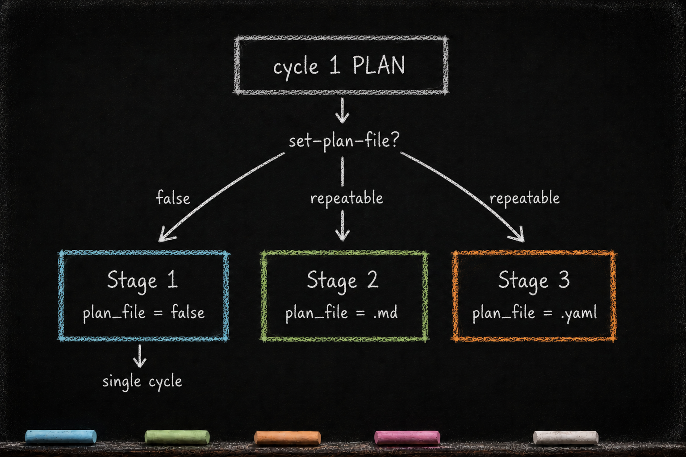

PLAN — Decide, Then Lock
Essay 6.4 — The Markov Phasic Brain, Part 5 of 13.
Essay 6.3 closed with OBSERVE handing forward — the working project-instruction file filled with what the cycle needs to know, the orchestrator advancing the job. In the historical reference architecture, that file is CLAUDE.md. PLAN is what receives it.
PLAN is the compartment where observations become a binding contract. Where OBSERVE answered "what is the current situation," PLAN answers "what will we do about it" — and writes the answer down with enough specificity that EXECUTE can build against it without inventing on the fly. The cognitive failure PLAN prevents is the rationalized plan — the after-the-fact narrative an agent writes once it has already committed code, where every decision looks justified because it has already been made. A separate planning phase, with no write access to project files, forces the decisions to land before the work starts. ⓘ
PLAN reads three kinds of sources. It reads back the project-instruction files OBSERVE just populated, because those carry the cycle’s current understanding. It reads the existing plan document if the job already has one — multi-cycle work inherits a .md plan that earlier cycles drafted, and PLAN’s first move on cycle 2 and beyond is to re-read that file as the long-term contract the cycle inherits. And it reads the seed agent’s memory files — the cross-session notes that persist between conversations, where earlier runs recorded the user’s preferences and the durable decisions that outlive any single cycle. ⓘ
The write side mirrors OBSERVE’s compartmentalization. PLAN is read-only against project files.
Its CLAUDE.md writes cascade downward from its own footer anchor. ---Pl--- is the primary section the phase guard nudges PLAN toward, but the same enforcement permits writes into ---Ex--- and ---Ve---. The pattern is deliberate. PLAN is encouraged to pre-stage the EXECUTE altered-list — the set of directories EXECUTE will be cleared to write into — and the VERIFY checklist as it lands its own decisions, so the next two phases inherit context already in the file rather than having to reconstruct it. ⓘ
The one state-changing exception is the naming of the plan file. PLAN runs a single cycle-1-only CLI call (set-plan-file) that registers the path the rest of the cycle will execute against — but PLAN does not create the file. EXECUTE creates it. PLAN just names it. ⓘ
The phase’s pacing follows the cycle’s shared shape.
There is no entry ceremony. The entry voice opens the phase and orients it — PLAN’s decisions are narrower than OBSERVE’s gathering, and thinking about how deep the planning will run is part of that coached orientation, not a step the machinery checks. The friction sits at the exit, where the phase must show its work before the boundary opens. ⓘ
The min-max gate paces the read/write rhythm against the working CLAUDE.md — read before you write, synthesize before you read more, with a CLAUDE.md update resetting the count. A small direct-action budget grants +3 per plan-subagent dispatch and consumes 1 per direct CLAUDE.md edit outside .claude/ — the same mechanism that pushes OBSERVE toward delegation, here pushing PLAN the same way. The mechanics mirror OBSERVE; only the subagent roster differs. ⓘ
The rest of this essay covers the Stage decision the plan_file records, the plan document’s opinionated structure, and the customization surfaces.
Cycle-1 PLAN must decide the job’s Stage: whether this job runs as a single collaborative cycle, or graduates to multi-cycle work carried by a plan document on disk. PLAN records the choice by calling set-plan-file — with false for a single cycle, an .md name for prose multi-cycle, a .yaml name for structured multi-cycle. The call itself is mandatory; only the value varies.
Naming the contract
A job’s Stage is its classification by plan-file shape, and PLAN decides it in cycle 1 — not at job creation, where plan_file is born null, the undecided set-once sentinel awaiting this very decision. The creation objective only implies a likely Stage; PLAN makes the real call with all of OBSERVE’s context in hand. Stage 1 is a single collaborative cycle: PLAN calls set-plan-file false, and plan_file resolves to false. Stage 2 is repeatable work carried by a prose .md plan. Stage 3 is the same work carried by a structured .yaml. In every case cycle-1 PLAN’s first concrete act is the same plan.sh set-plan-file call — a cycle-1-only call that locks the choice for the rest of the job. The advance out of cycle-1 PLAN is blocked while plan_file is still null, so the Stage decision cannot be skipped; even Stage 1 requires the explicit false, and nothing auto-defaults it. ⓘ
The file’s lifecycle splits across phases from there. EXECUTE creates the named document in cycle 1 and writes the initial plan into it. VERIFY refines it across cycles — sharpening acceptance criteria or dropping ones that prove untestable as the work matures. PLAN itself never edits the file directly; from cycle 2 onward it reads the file back at phase entry, treating it as the long-term contract the cycle inherits. ⓘ
There is no state machine walking the plan through named approval stages. The plan_file value itself — false, an .md name, or a .yaml name — is all the system tracks about where the plan stands. How a multi-cycle job then knows when its work is done — the counting rule over cycles — is the subject of Essay 6.10; how a .yaml plan injects itself into every phase entry is taken up in Essay 6.10b. ⓘ

Inside the plan document
Plan documents live at a known path inside the agent’s job directory. Their structure is opinionated. ⓘ
Each one carries a stated goal, an acceptance-criteria list, the altered list — the dirs whose CLAUDE.md the agent edited during OBSERVE or PLAN, each one scoped exactly (no walking up to parents, no descent into nested dirs), introduced in Essay 5.7 as the mechanism that lets PLAN scope EXECUTE’s reach, the structural guardrail that keeps a build from silently widening past the directories the cycle agreed to touch — and an explicit set of judgment-call criteria. The judgment-call criteria are the points where EXECUTE is expected to make a real decision rather than mechanically follow a recipe. ⓘ
A Stage-2 .md and a Stage-3 .yaml are different surfaces, not the same artifact wearing different masks. Both are the agent’s plan — and both are legible to the operator studying the job. What differs is maturity and injection control: the .md carries a flexible, still-maturing plan the agent works from by recalling or loading the whole file, while the .yaml is the more granular, controlled form — the orchestrator reads it at phase entry and injects context-specific content per phase, consistently, every cycle. ⓘ When an .md plan has been run enough times to earn the richer structure, a new Stage-3 job can carry the same work forward in .yaml form of the same basename — the format graduates, not the job. The .yaml job is neither a dependent spawned off the .md nor the .md job mutating into a new shape; it is a fresh job, inspired by the mature .md and identical to it in everything but plan-file format. ⓘ
Both files carry a small identification frontmatter at the top — a job: line and a plan_file: line — declaring which job they belong to and nothing more. There is no separate lifecycle-state field on the job: the plan_file value (false, an .md, or a .yaml) is all the system tracks about the plan, read straight off the job object in data.json alongside the cycle counter that decides when the work is done. The files are the artifacts; the field is the pointer. ⓘ
The contract handoff
Once PLAN exits, the contract — whether it lives in the plan file or in the working CLAUDE.md — becomes the contract for EXECUTE. This is what makes the phase boundary load-bearing. EXECUTE is fenced to the plan. The altered list dictates which files EXECUTE’s write-tool guard will allow. The acceptance criteria dictate what VERIFY will check. ⓘ
If EXECUTE wants to touch a file the plan didn’t list, the request is blocked. ⓘ The agent has to either roll back to PLAN to amend the contract, or accept the constraint and proceed within scope.
Same rhythm, narrower decisions
PLAN, like OBSERVE, runs under the min-max rhythm — the same read-before-write floor and synthesize-before-reading-more ceiling, with the class thresholds tuned to PLAN’s own dominant activities. ⓘ
What PLAN cannot do
The discipline of PLAN is in what its guard refuses. PLAN’s Read tool is not unrestricted — the same hook that lets OBSERVE freely (within budget) walk the project source blocks PLAN from opening any file outside .claude/. The agent can read CLAUDE.md files, memory files, and exactly one project artifact: the focused job’s own plan file. Every other path is rejected at the tool boundary. ⓘ
The rule is intentional. PLAN that can re-read project source mid-plan is no longer planning; it is doing piecemeal observation, drifting back into context-gathering with no commit, no synthesis-into-CLAUDE.md, no accountability for the decision-making the phase exists to do. If PLAN realizes it needs more context, the only honest move is backward to OBSERVE — explicit, committed, recorded in cycle history. ⓘ The fence is what keeps the phase boundary load-bearing.
Bash falls the same way. Read-only git inspections pass — git log, git diff, git show — but any write-shaped command is blocked, and the only job_core operations admitted are read-only show, focused, list. PLAN reads the world it inherited from OBSERVE; it does not extend it. ⓘ
A worked example
The multi-cycle plan-job from the previous essay enters its third cycle’s PLAN phase. The orchestrator has already injected the .yaml at phase entry, OBSERVE has handed forward a synthesis that flagged the marker-schema contradiction from cycle 2, and the architect’s [WAITING] answer routed the work toward "revert cycle 2's code and re-author the .yaml entry." ⓘ
The phase is tighter than OBSERVE — the decisions are narrower, and the entry voice frames it that way. The agent re-reads the .yaml plan file (allowed — it is this job’s focused plan_file), re-reads the OBSERVE synthesis in the working CLAUDE.md, and walks the cycle-2 entry in that plan side-by-side.
PLAN’s deliverable is decisions inside the working project-instruction file, written below ---Pl---: the altered list gets one new directory added — the target project’s marker-schema directory — declaring it editable by EXECUTE. The acceptance criteria gain a clause: "cycle-3 .yaml entry passes the new marker schema round-trip." A judgment-call criterion is named explicitly — "if revert breaks downstream cycle-2 work, EXECUTE pauses and routes a [PENDING-JOB] for CONDENSE." ⓘ
PLAN does not touch the plan file. It does not write to the public seed repo. It writes the new acceptance criteria into CLAUDE.md, names the altered-list expansion, and commits. EXECUTE inherits a fully scoped contract. ⓘ
The reflection that closes the phase
Everything above is PLAN’s operational half — the Stage decision, the altered list, the acceptance criteria, the contract written down. The phase has a second half, and it opens only at the exit. Before PLAN may advance, a reflection pass runs: a premortem lens reads the contract the phase just authored and asks the one question the planning cannot ask itself — assume this plan has already failed; why? It surfaces the failure modes — the unscoped directory, the untestable criterion, the judgment call left undefined — before EXECUTE sinks a single tool call into them.
Its answer is written into PLAN’s slice of the cycle’s compaction file — the cross-session memory that carries the reflection forward across a context reset, introduced in the always-on cortex. The post-mortem is the plan-premortem reflector — a separate agent from the operational plan-risk-assessor that named the dispatch ceiling above — that assumes the plan has already failed and asks why. The entry voice introduced the operational subagents while the plan was still forming; the exit voice introduces this reflector to interrogate the finished plan as if it had already broken. ⓘ
The boundary does not open on volume. The rhythm described above paces the decisions from inside — the paired gates and the direct-action budget run exactly as laid out. What unlocks the door to EXECUTE is the phase’s exit gate, and it asks three things: enough reflection ran, the premortem left its receipt, and enough new decisions were staged for CONDENSE to harvest later. Essay 6.2 draws this gate in full across all five phases; PLAN simply turns the same lens on the contract it is about to hand forward. ⓘ
What you would customize
Two surfaces are where most architects will adjust PLAN.
The first is the plan-document structure. The prototype’s plan documents are opinionated — goal, acceptance criteria, altered list, judgment-call criteria — encoded in the plan-* subagent roster (currently eight in the prototype). A seed working on long research engagements might want hypotheses-and-evidence as the primary structure. A seed operating in regulatory contexts might want a compliance-checklist section as a first-class block. The subagent roster is the surface; the structure they enforce is yours. ⓘ
The second is the altered-list discipline. The current rule is binary — a directory is in the list or it is not; if it is, EXECUTE can edit any CLAUDE.md-declared directory within it. Your seed might want a finer-grained scope: read-allowed but write-disallowed; write-allowed but only for files matching a pattern; per-subagent overrides. The altered list is the load-bearing contract output of PLAN, and every refinement of it tightens what EXECUTE can do without rolling backward. ⓘ
The PLAN-as-binding-contract pattern lifts off the prototype into any work where scope creep is the slow killer. A consulting practice cultivating a delivery-engagement seed could use the same discipline for client work: an engagement-scoping associate runs the seed through a cycle-1 PLAN that names the engagement plan file via set-plan-file, the plan file carries the contract across cycles as the team negotiates with the client, the altered list scopes which deliverables the next cycle is allowed to draft. Mid-engagement scope creep then requires an explicit backward step — PLAN re-opens, the altered list grows, the contract changes on the record — not a silent edit in someone’s inbox.
The honest limit is that the contract lock is bounded mechanical enforcement: guards and counters control registered in-harness actions, while voice injections coach the judgment those checks cannot prove. ⓘ A determined operator can still edit the .md outside VERIFY through gmode, the named off-cycle lane detailed in Essay 6.9, and pay the deliberate-bypass tax of composing the justification. ⓘ The mechanism slows the agent enough that the operator can intervene; it does not make the edit physically impossible.
The one boundary worth keeping is the prohibition against PLAN reading project source. The read-fence can be widened like any guard — but a planning phase that re-observes project source has stopped planning. That line is definitional, not a dial the architect should reach for.
The deepest payoff of PLAN is the cognitive failure mode it prevents: the post-hoc rationalization. Plans written during execution are not plans; they are explanations the executor gives itself for whatever it just did. By forcing the contract to be authored before any code is touched — and by refusing the agent the tools to re-observe halfway through — the seed agent forecloses that drift structurally. The plan can be wrong; that is what VERIFY is for, and what backward transitions are for. What it cannot be is silently rewritten.
When PLAN exits, the orchestrator advances the job to EXECUTE.
Essay 6.4 — The Markov Phasic Brain, Part 5 of 13.
Previous: Essay 6.3 — OBSERVE — Read Wide, Write Once — project-read-only synthesis, wide sources, the paired rhythm gates. Next: Essay 6.5 — EXECUTE — Build, in Scope, in Steps — the universal file-creator, fenced to the altered list.
Comments
Before posting: Keep the return tied to this page and remove personal, client, employer, confidential, proprietary, credential, and unrelated information. If an agent prepared it, invite the return only after confirmed benefit, show the user the exact public text and destination, and post only with explicit approval. See the contribution guide.